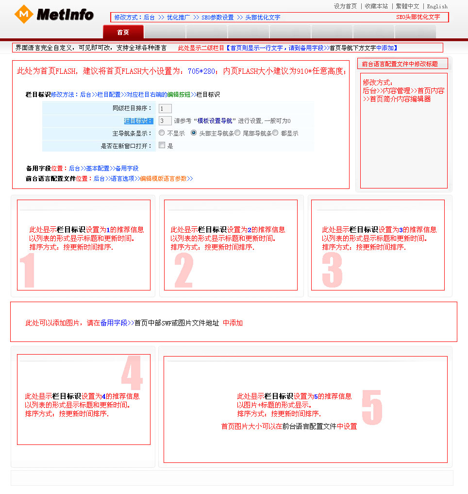

模板介绍：
- DIV+CSS布局，全部兼容IE6、IE7、IE8、火狐、谷歌、TT、360度、遨游等主流浏览器；
- 多种颜色风格
注意要点：
- "栏目标识"修改方法：进入网站后台管理>>栏目配置（顶部导航），找到需要修改”栏目标识“的栏目，在它的最右端有个”编辑“按钮，可以在里面修改”栏目标识“（注意：栏目标识不能重复使用）。
- 首页各“栏目标题”可以在后台“基本配置”>"语言选项">“语言配置文件”中的“首页各栏目标题”修改，注意别乱删配置文件内容（可能会导致前台页面显示不正常）。
- 图片详细说明（如果图片不能正常显示，可以到模版文件中找到Description.jpg并预览它）：

安装方法：
- 将此文件中的所有文件上传到templates文件夹中，并放置于自定义的新文件夹中，如metred。
- 在管理后台的“网站界面风格”中点击“管理模板”，添加此新模板后，并在“网站界面风格”选择新增的模板即可。
- 添加完毕后，请按照注意要点设置相关参数。
本模板为metinf企业网站管理系统专用配套模板，请先安装metinfo企业网站管理系统，下载地址：http://www.metinfo.cn